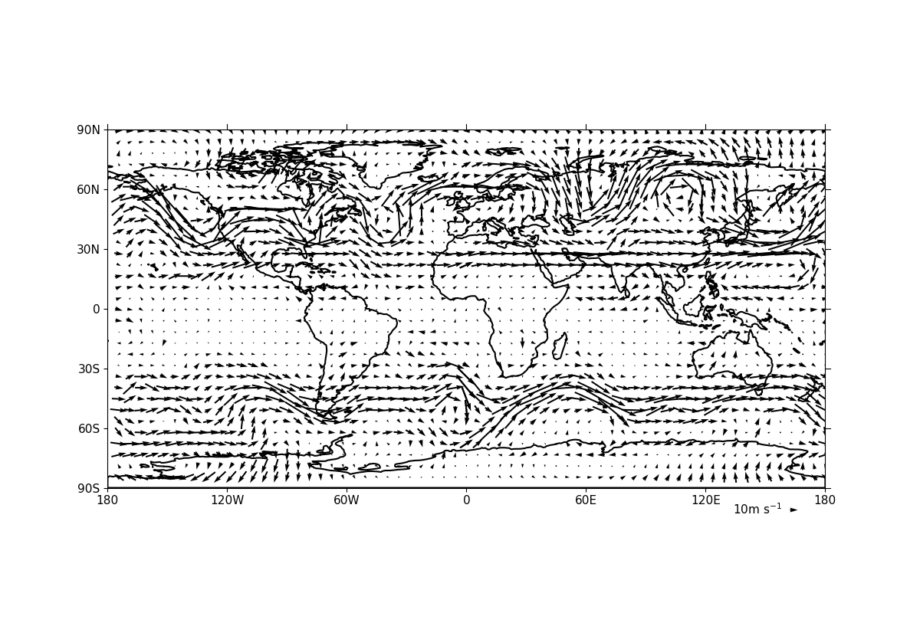
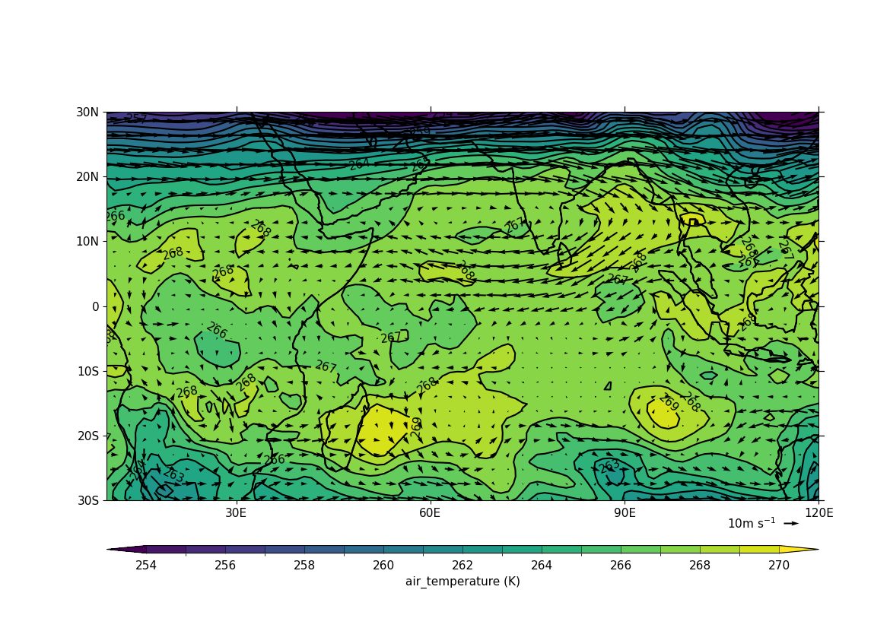
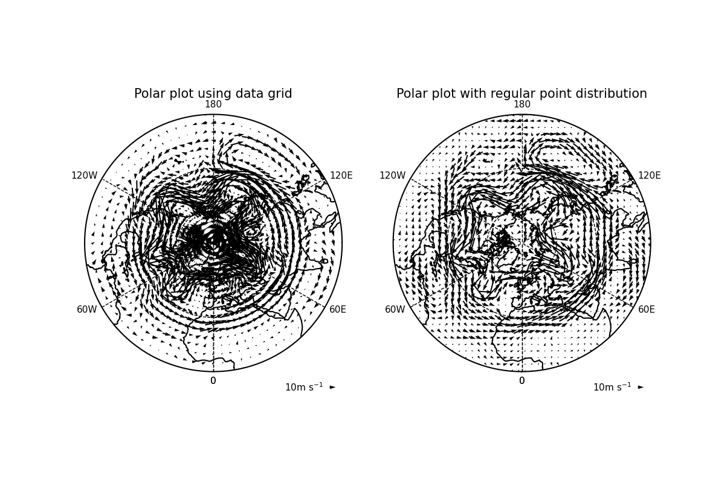
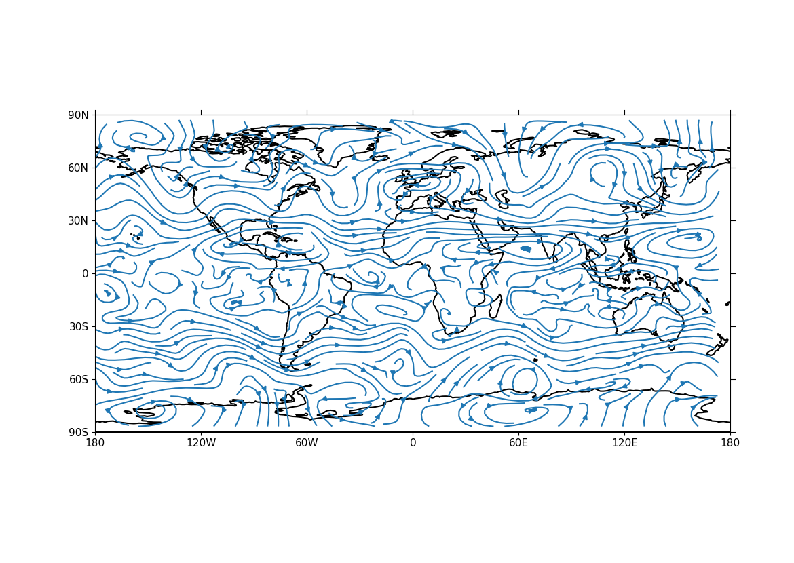
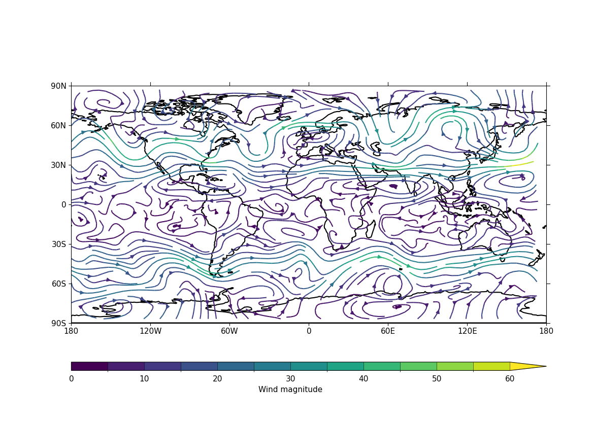

Vector and stream plots#
Example 13: Basic vector plot#
f = cf.read(f"cfplot_data/ggap.nc")
u = f.select_by_identity("eastward_wind")[0]
v = f.select_by_identity("northward_wind")[0]
# Subspace to get values for a specified pressure, here 500 mbar
u = u.subspace(pressure=500)
v = v.subspace(pressure=500)
cfp.vect(u=u, v=v, key_length=10, scale=100, stride=5)

Example 14: Vector plot overlaid on a contour map#
f = cf.read(f"cfplot_data/ggap.nc")
u = f.select_by_identity("eastward_wind")[0]
v = f.select_by_identity("northward_wind")[0]
t = f.select_by_identity("air_temperature")[0]
# Subspace to get values for a specified pressure, here 500 mbar
u = u.subspace(pressure=500)
v = v.subspace(pressure=500)
t = t.subspace(pressure=500)
cfp.gopen()
cfp.mapset(lonmin=10, lonmax=120, latmin=-30, latmax=30)
cfp.levs(min=254, max=270, step=1)
cfp.con(t)
cfp.vect(u=u, v=v, key_length=10, scale=50, stride=2)
cfp.gclose()

Example 15: Polar projection vector plot#
f = cf.read(f"cfplot_data/ggap.nc")
u = f.select_by_identity("eastward_wind")[0]
v = f.select_by_identity("northward_wind")[0]
u = u.subspace(Z=500)
v = v.subspace(Z=500)
cfp.mapset(proj="npstere")
cfp.gopen(columns=2)
cfp.vect(
u=u,
v=v,
key_length=10,
scale=100,
stride=4,
title="Polar plot using data grid",
)
cfp.gpos(2)
cfp.vect(
u=u,
v=v,
key_length=10,
scale=100,
pts=40,
title="Polar plot with regular point distribution",
)
cfp.gclose()

Here we see the difference between plotting the vectors on the data grid and on a interpolated grid. The supplied grid gives a bullseye effect making the wind direction difficult to see near the pole.
Example 16a: Zonal vector plot#
c = cf.read(f"cfplot_data/vaAMIPlcd_DJF.nc")[0]
c = c.subspace(Y=cf.wi(-60, 60))
c = c.subspace(X=cf.wi(80, 160))
c = c.collapse("T: mean X: mean")
g = cf.read(f"cfplot_data/wapAMIPlcd_DJF.nc")[0]
g = g.subspace(Y=cf.wi(-60, 60))
g = g.subspace(X=cf.wi(80, 160))
g = g.collapse("T: mean X: mean")
v = -1 * g
cfp.vect(
u=c,
v=v,
key_length=[5, 0.05],
scale=[20, 0.2],
title="DJF",
key_location=[0.95, -0.05],
)

Here we make a zonal mean vector plot with different vector keys and scaling factors for the X and Y directions.
Example 16b: Basic stream plot#
f = cf.read(f"cfplot_data/ggap.nc")
u = f.select_by_identity("eastward_wind")[0]
v = f.select_by_identity("northward_wind")[0]
u = u.subspace(pressure=500)
v = v.subspace(pressure=500)
u = u.anchor("X", -180)
v = v.anchor("X", -180)
cfp.stream(u=u, v=v, density=2)

A streamplot is used to show fluid flow and 2D field gradients. In this first example the data goes from 0 to 358.875 in longitude. The cartopy / matplotlib interface seems to need the data to be inside the data window in longitude so we anchor the data in cf-python using the anchor method to start at -180 in longitude. If we didn't do this any longitudes less than zero would have no streams drawn.
Example 16c: Stream plot in a colour scale#
f = cf.read(f"cfplot_data/ggap.nc")
u = f.select_by_identity("eastward_wind")[0]
v = f.select_by_identity("northward_wind")[0]
u = u.subspace(pressure=500)
v = v.subspace(pressure=500)
u = u.anchor("X", -180)
v = v.anchor("X", -180)
magnitude = (u--2 + v--2) -- 0.5
mag = np.squeeze(magnitude.array)
cfp.levs(0, 60, 5, extend="max")
cfp.cscale("viridis", ncols=13)
cfp.gopen()
cfp.stream(u=u, v=v, density=2, color=mag)
cfp.cbar(
levs=cfp.plotvars.levels,
position=[0.12, 0.12, 0.8, 0.02],
title="Wind magnitude",
)
cfp.gclose()

In the second streamplot example a colorbar showing the intensity of the wind is drawn.